Karntner Strasse（克恩腾大街）上的L.Heiner咖啡馆，象北京的老茶馆一样客人大多是本地上了年纪的，年轻人较少，更别说游客了。Miranda在我和Helen忘情于SWAROVSKI而忽略她的时候，她独自进入这家咖啡馆。当地人对这个进入其local场所的外国人投以好奇的注视。从SWAROVSKI店里出来，我们在咖啡馆二楼找到Miranda，乘着还有时间点了喝的和点心，离开前我在楼梯上留了影。
这次欧洲行特别感受到国内购买力的强大，客人喝完茶水，免费加热水理所当然啊。而这些欧洲消费场所你点一杯茶，端上来一杯热水，自己丢茶包进去，喝完了就没了，不会免费给你加热水，除非你在那里用餐，可能也就给加个一次热水。你要继续喝茶，请另点一杯。


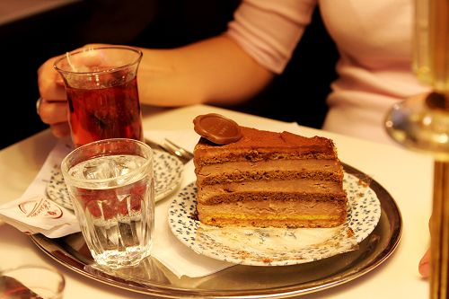

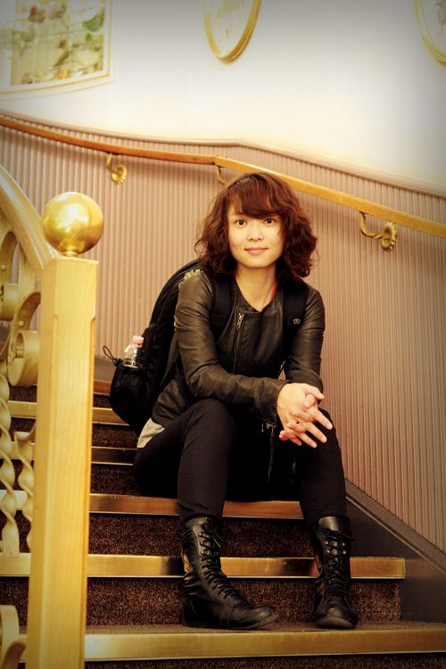
SISI博物馆的HOFBURG咖啡餐馆，里面有个非常不高兴的中年男性服务员，收拾餐具的手脚很重，乒乓作响，拉着脸，见多了只表现礼貌礼节的外国人，忽然出现这么一个对情绪毫不掩饰的家伙，挺让人放松的。旁边一大桌法国中老年人，Miranda向对她说“谢谢”的法国老太太请教如何用法语说“不用谢”？一个英语专业毕业的人楞是没让老太太明白，换了德国人可能就不一样了。我点了杯grobe schale半咖啡半热奶的泡沫咖啡，咖啡杯上印着SISI公主的剪影头像，以及被Miranda笑称为肥手指的烤肠，上面还系着商标呢。
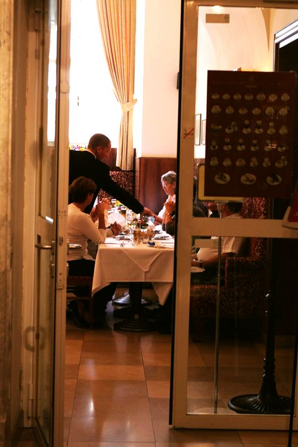
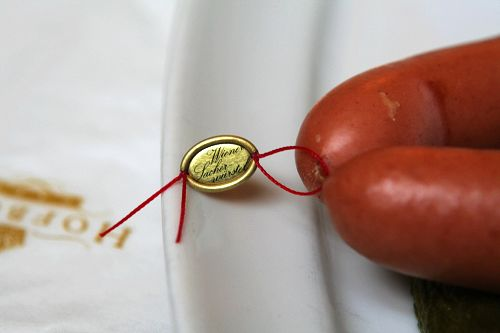

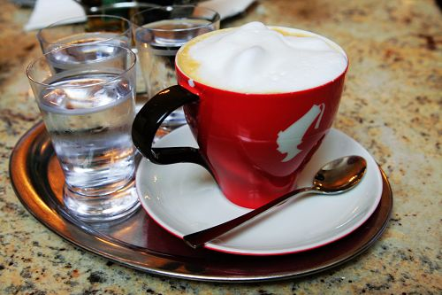

就是在HOFBURG咖啡餐馆外的广场上遭遇小偷的，二战老兵在广场上表演军乐，引来众多围观者，我拍照的时候感觉到自己的包动了一下，低头一看拉链已经被拉开，再一回头，两个个头不高的年轻男女站在我身后，我回头望他们的时候他们赶紧转身离开。好在包里面塞的比较满，要从里面抽东西出来不容易。据说维也纳的小偷伪装成游客摸样混在人群里，以及假警察抢劫游客财物。要在咱中国，一个老外的包被小偷拉开了，热情勇敢的中国人民一定会挺身而出的吧？
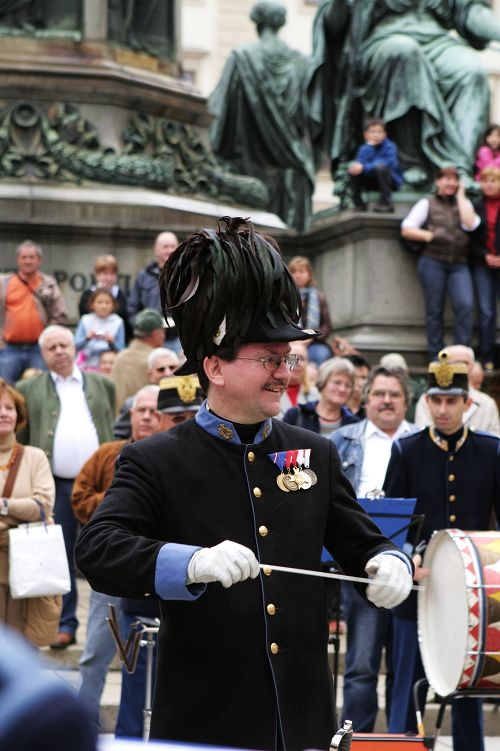
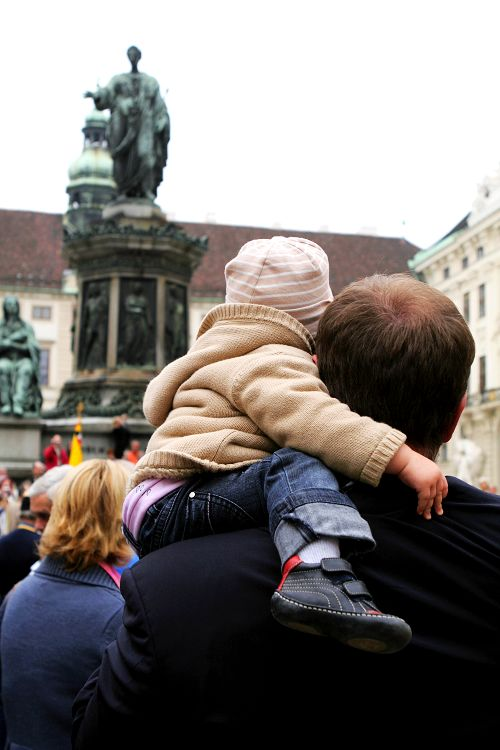
这便是之前提到的具有150年历史的音乐学校的建筑，和Helen在里面观看了一场专门针对游客的小型演出。结果我带错了镜头，坐在第二排完全发挥不了长焦的作用，只能将就拍了几张。演出过程中是不允许拍摄的，以及里面的工作人员青一色帅哥靓女，着黑色正装。
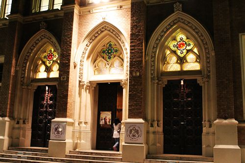

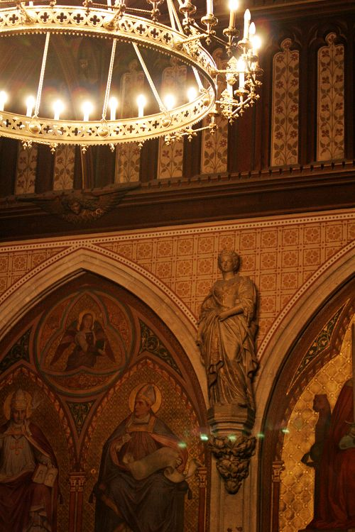


观众中有20来个着华贵晚礼服珠光宝气的男女宾客，我觉得是蒙古人，而Helen说是哈萨克斯坦一带的。演出休息时间他们上台前留影，煞是引人注目。

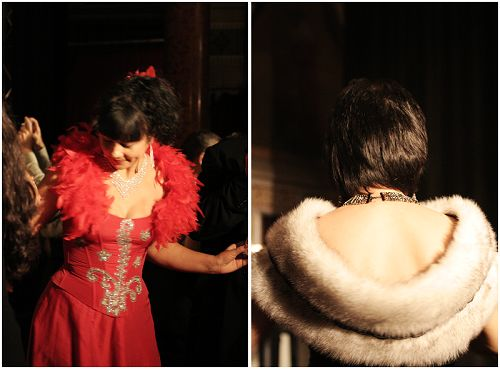
乘马车游览维也纳最繁华的市区应当是不错的选择，虽然我们选的马车的马不那么光鲜亮丽，也丝毫影响不了观光的心情。遗憾的是天气不怎么好，来点阳光会灿烂许多。有人居然在马车上睡着了。。。。
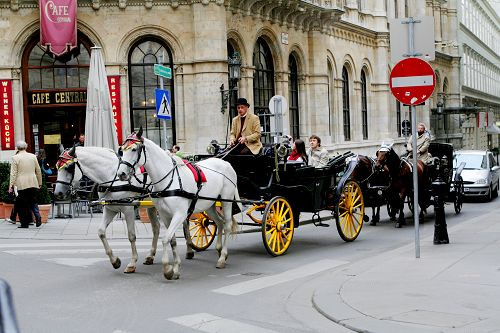
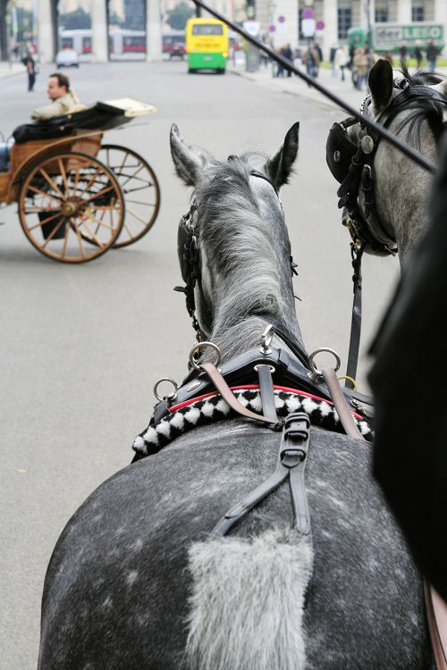
维也纳市政厅门口居然是个热闹的集市，在97.3米高的塔楼顶上有一尊“市政厅铁人”，象征维也纳。据说每年夏季市政厅门前会举办精彩的音乐会。换了国内，政府机关门前怎么可能允许这样呢？

6 Responses to “@Vienna-5”
2009-11-07
演出的场地和艺术家都很吸引我，有机会的话我会亲临现场体会。
2009-11-08
“有人居然在马车上睡着了”，有人居然还强行删除相机里的铁证。。。
2009-11-08
马车太贵了。我记得是20块还是45块？
反正我没舍得。
2009-11-08
好象是45欧哦，不过要有太阳乘马车会更有情调。遗憾~
2009-11-09
45欧坐趟马车，好贵哦~~找天周末把游记从头到尾好好看一遍~~这才过瘾！
2009-11-09
60欧！特此更正。坐马车的帐是敝人处理滴。
Leave A Reply
存档只读，评论已关闭。